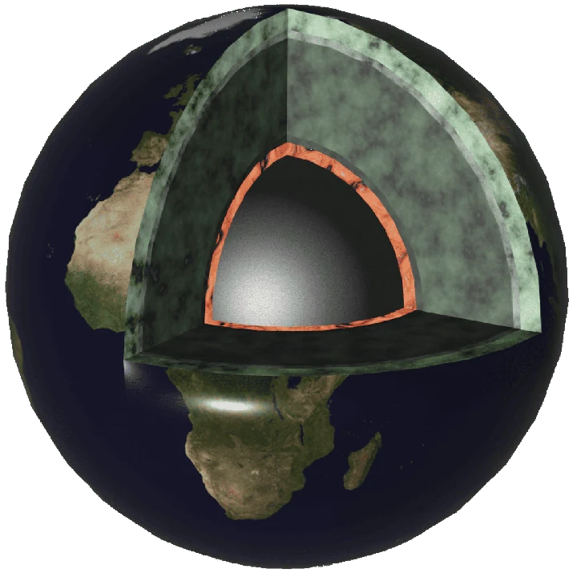

Open tools for planetary science
Magrathea
Lead developer
Don't panic! A flexible, open-source platform for modeling planetary interiors for astronomers, planetary scientists, mice, and more.
Magrathea is a C++ code for calculating the internal structure of differentiated planets and inferring compositions from measured masses and radii. Its modular equations of state & phase diagrams let researchers change the planet model without changing the underlying framework.
I developed the original code with Chenliang Huang and Jason Steffen and led the version 2 publication. The code is used by more than ten research teams, from observers characterizing individual planets to researchers modeling planet formation.

PEARL
Co-coordinator
Planetary EOS Archive
and Reference Library
I co-coordinate PEARL with Artem Aguichine. We bring experimentalists and modelers together to preserve and share equations of state for planetary materials, along with their supporting references, uncertainties, and limits of applicability.
The PEARL website provides access to the archive, and the underlying database is maintained on GitHub. We welcome researchers interested in joining the collaboration or contributing equations of state.
How composition affects planetary radius
Explore how composition, surface temperature, and a thin atmosphere change the predicted radius.
Choose a planet
Each corner represents a planet with 100% of its mass in a different interior layer: core, mantle, or water. The color shows radius across mixtures of these components. A line of constant color is a contour of constant radius.
A grid of precomputed Magrathea models. Download this diagram (SVG)

Other tools and archived projects
I also host a travel map generator, exoplanet-system plots, and an interactive poster from Exoplanets III.
Maps, plots & archived projects